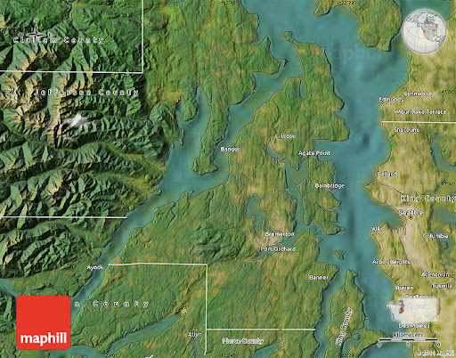

Introduction
Hello! My name is Sean Welter, and I have been walking for basically my entire life. One of my favorite pastimes is to find new places to go walking, and since I've been living in Bremerton for almost a decade at this point, I have quite a few good places to walk under my belt. This website is intended to give a small overview of some of my favorite locations.
Check out the first set of links for my own thoughts on various hiking and walking trails I have taken in the specificed areas! After that, check out the second set of links for more official overviews of local trails.

Photo Album
UNDER CONSTRUCTION